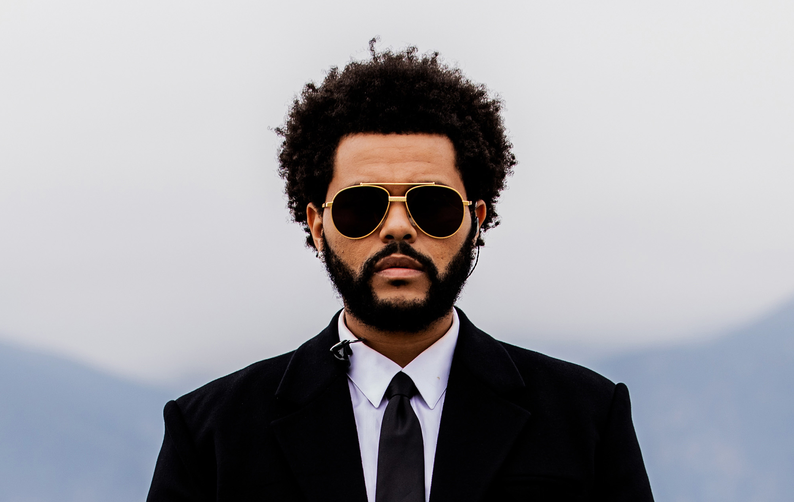
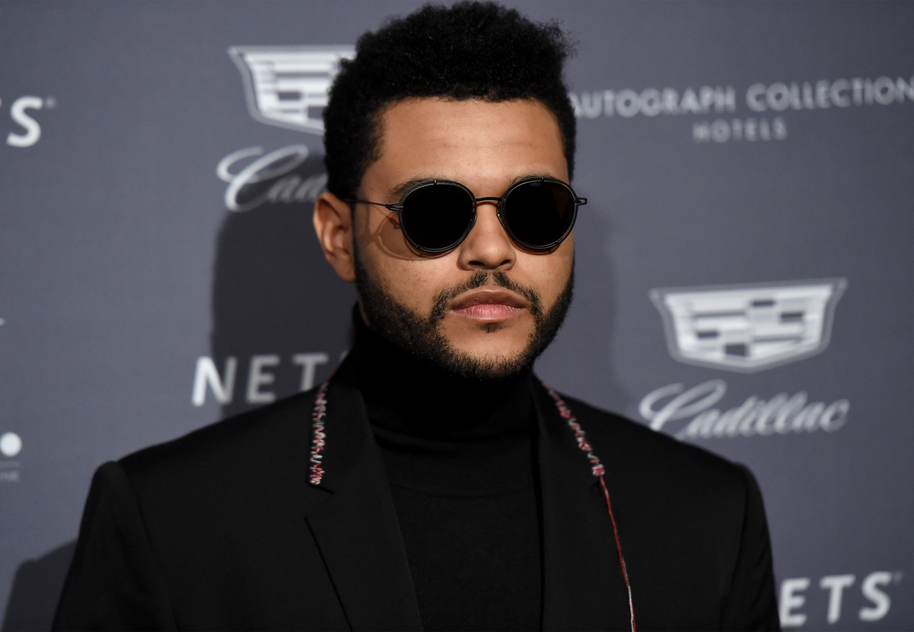

Les News
The Weeknd Says He’s Done With Features — Unless This Group Gets Back Together
"I just wanna say that this is gonna be the last feature I ever do, ever in my career," he announced during his Warsaw concert before performing "Another One of Me."
On Wednesday night, The Weeknd announced the “final feature” of his career during his Warsaw tour stop. The Canadian-Ethiopian superstar born Abel Tesfaye performed his verse from “Another One of Me” at Poland’s PGE Narodowy. “This next song I’m about to perform is an unreleased record. I haven’t dropped it yet. It’s called ‘Another One of Me,'” he announced. “And I just wanna say that this is gonna be the last feature I ever do, ever in my career. So I wanna perform it for you guys tonight.”
Lire la suite ...
"The Weeknd" becomes the biggest artist in Spotify’s history
Simply the singer who has the most streams. While streaming is now the main mode of music consumption worldwide, it is also with it that we measure the popularity and success of a singer or musician.

And if at the moment, many titles are entering the "billionaires club", these tracks with more than a billion streams on the same platform, some artists are doing even better than others. Like The Weeknd, which continues to break records, thanks to its title "Starboy", in collaboration with Daft Punk, which is still a huge success around the world.
Lire la suite ...
Taylor Swift, The Weeknd... Why you won’t hear them on TikTok
In an open letter, the global group announced it was stopping its collaboration with the Chinese video platform, accusing it of not "paying the fair value of music".
Fin du contrat. Ce mardi 31 janvier, le contrat qui liait le groupe Universal Music Group (UMG) et la plateforme TikTok a expiré. Malgré des négociations, il n’a pas été renouvelé et le label américain a annoncé retirer l’intégralité des chansons de son catalogue de la plateforme. En cause : des désaccords sur la rémunération des artistes et des auteurs-compositeurs. Tout le catalogue des artistes labellisés chez Universal sera supprimé de TikTok, indique le label à actu.fr.
Lire la suite ...